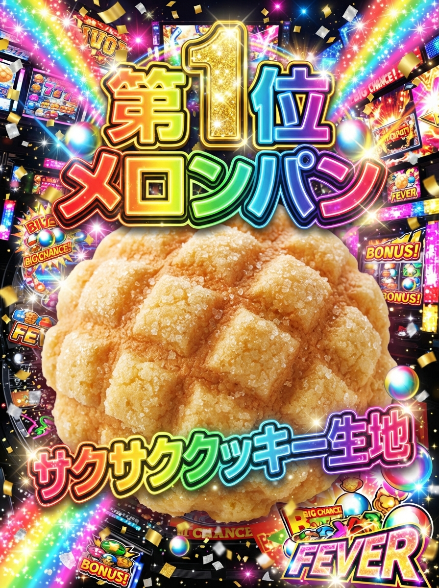
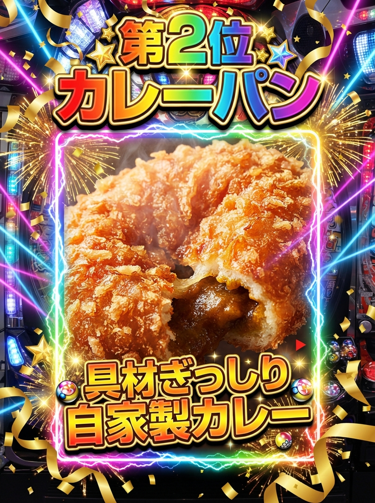
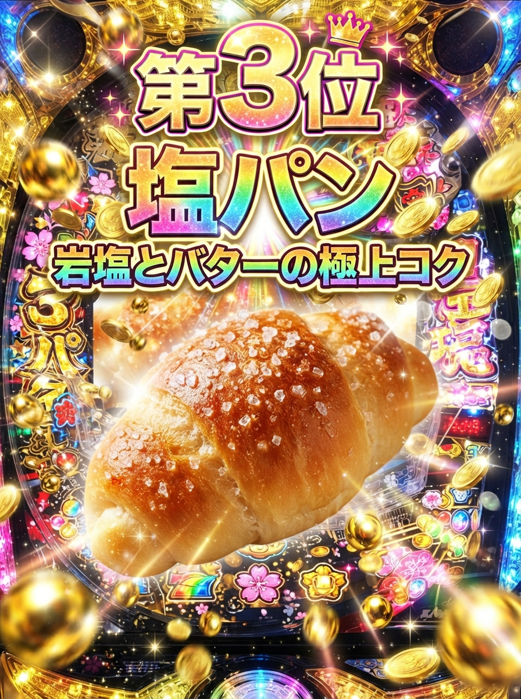
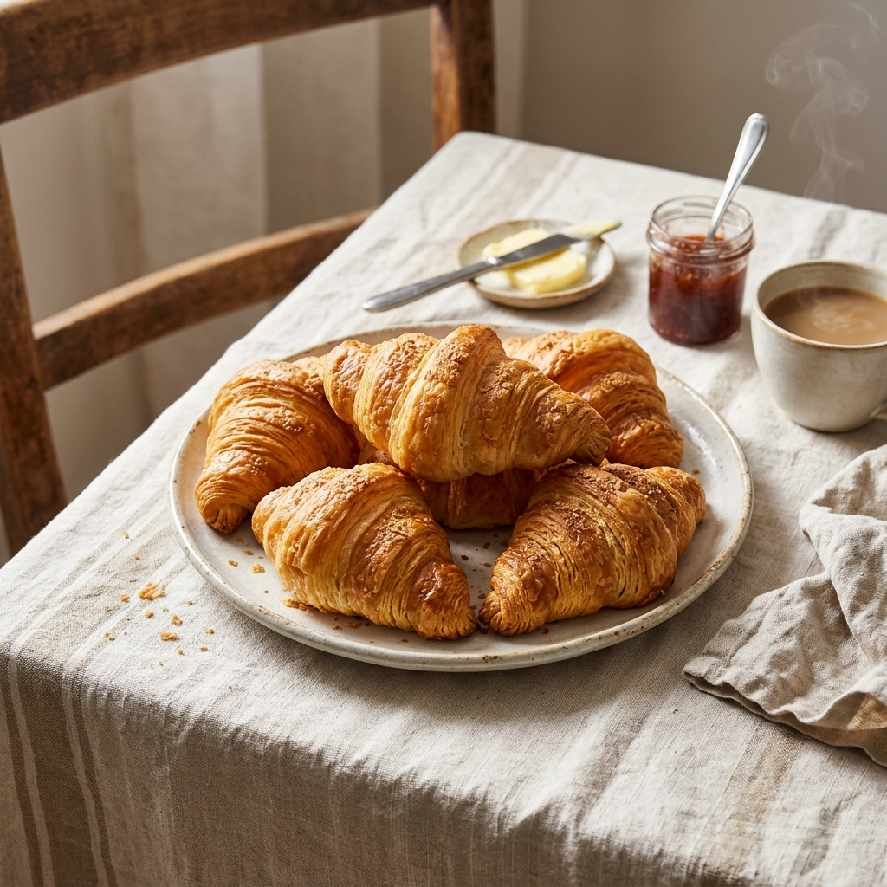
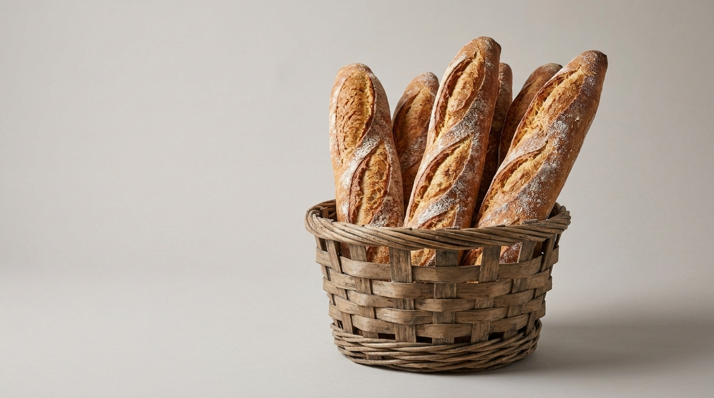

1位 メロンパン

メロンパン
外はサクサクのクッキー生地、中はふんわり仕上げた当店の1番人気商品です。
2位

カレーパン
じっくり煮込んだ自家製カレーがぎっしり詰まった、具だくさんの揚げたてカレーパンです。
3位

アンパン
バターのじゅわっと溢れる濃厚なコクと大粒岩塩の塩気が絶妙に溶け合う、一度食べたらやみつきになる極上の塩パン
4位

クロワッサン
国産バターを贅沢に折り込み、芳醇な香りと幾重にも重なるサクサク食感が楽しめます。
5位

フランスパン（バゲット）
小麦本来の味わいとパリッとした皮の香ばしさが際立つ、本格派の伝統バゲットです。